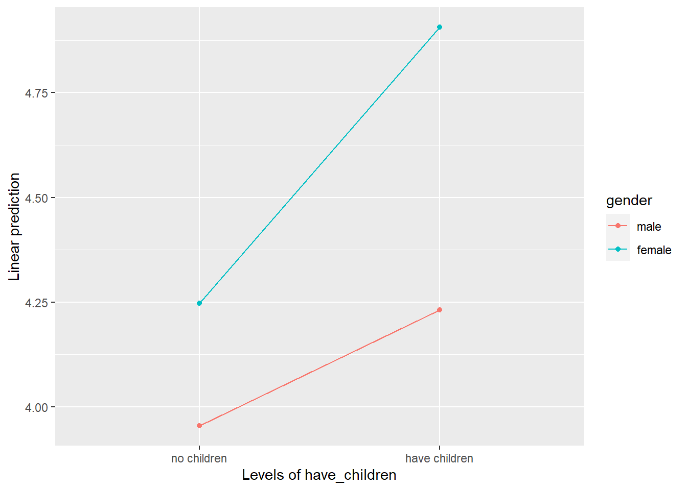

8 Hypothesis Testing
8.1 Overview
The bulk of what we cover in PSYC208 is hypothesis testing. This section guides you through the steps of conducting the various hypothesis tests. This only serves as an overview for students who are interested to read ahead. I will demonstrate how to conduct the hypothesis tests in class as well as how to interpret the results.
To illustrate the various tests, we will use the same hypothetical dataset, SWB.csv as before. To follow along, please download the dataset: SWB.csv.
8.3 Scientific Notation
In addition to loading the packages and reading in the data file, it might also be helpful to run the code below to turn off scientific notation.
options(scipen = 999) # Turn off scientific notation
options(digits = 9) # Display results to 9 decimal placesScientific notation is a way of expressing numbers that are very large or very small. It usually takes the form of m × 10^n for very large numbers and m × 10^-n for very small numbers, where ^ stands for “to the power of”. So, suppose we have the following number: 0.000000000000000477. In scientific notation, this would be represented as4.77 x 10^-16 (i.e., 16 decimal places). Alternatively, it might be represented as 4.77e-16. They mean the same thing.
Here’s a quick question to see if you understood scientific notation. Which of the following is the scientific notation for 0.0123?
- 1.23e-1 / 1.23 x 10^-1
- 1.23e-2 / 1.23 x 10^-2
- 1.23e-3 / 1.23 x 10^-3
- 1.23e-4 / 1.23 x 10^-4
(Answer after the next paragraph because I couldn’t find a better way to hide the answer!)
By default, R presents very small or very large numbers in scientific notation. However, this can be difficult to understand for people who don’t use scientific notation in their daily lives. I confess I have difficulty with scientific notation myself so I usually turn the scientific notation off. It’s really a matter of personal choice whether you want to turn it off or not, though! Just thought you’d like an option :)
And now, let’s begin with the hypothesis tests!
8.4 One-Sample T Test
8.4.1 When to Use A One-Sample T Test
We use a one-sample t test when we want to compare the data from one group to some hypothesised mean. You can think of it as taking a set of observations or scores and then comparing it to some value.
So, suppose we’re interested to know whether on average, in 2019, people were more or less satisfied with their lives than the neutral value of 4. (Why 4? Well, in this data set, the satisfaction with life items were measured on a 7-point scale, where 4 is the neutral point.) To answer this question, we will conduct a one-sample t test.
8.4.2 Conducting and Interpreting the One-Sample T Test
Before jumping into any hypothesis testing, though, it is good practice to first get the descriptive statistics for the variable(s) you’re investigating. At the minimum, you should get the mean and the standard deviation. (Anyway, you need to report means and standard deviations in APA style write-up!) I often also like to look at the minimum and maximum values to make sure the values are not out of ordinary (e.g., a value of -999 might throw up some red flags if, say, the likert scale only comprises values from 1 to 7).
# Calculate the average satisfaction with life score in 2019 for each participant
df <- df %>%
mutate(swls2019_avg = rowMeans(across(c(swls2019_1:swls2019_5))))
# Get the descriptive statistics
describe(df$swls2019_avg)## vars n mean sd median trimmed mad min max range skew kurtosis se
## X1 1 343 4.35 0.77 4.4 4.33 0.89 2 6 4 0.1 -0.48 0.04Then, we can conduct the t test.
# Conduct the one-sample t test to
# compare the satisfaction with life score in 2019 against
# the neutral point of 4
t.test(x = df$swls2019_avg, # variable we're analysing
mu = 4) # value we're comparing against##
## One Sample t-test
##
## data: df$swls2019_avg
## t = 8.530937, df = 342, p-value = 0.000000000000000477477
## alternative hypothesis: true mean is not equal to 4
## 95 percent confidence interval:
## 4.27188244 4.43482310
## sample estimates:
## mean of x
## 4.35335277# By default, R assumes a two-tailed test,
# that each observation comes from different individuals (i.e., they are not "paired"),
# and that the alpha level is .05, therefore confidence interval is 95%The results tell you that the average of swls2019_avg is 4.35 (but notice it doesn’t tell you any other descriptive statistics like standard deviation or maximum, so it’s still important to get the descriptives in other ways).
When we compare 4.35 to the neutral point of 4, the resulting t value is 8.53. With degrees of freedom 342, the p value is very small, at 0.000000000000000477477. Because p value is smaller than the alpha level of .05, the result is statistically significant. Because 4.35 is statistically significantly greater than 4, we would conclude that there is sufficient evidence that the satisfaction with life scores in 2019 is greater than the neutral value of 4.
In addition, the 95% confidence interval is [4.27, 4.43], which is interpreted as follows: We are 95% confident that the population mean 2019 satisfaction with life score is between 4.27 and 4.43.
8.4.3 Effect Size: Cohen’s d
In addition to hypothesis testing, we also need to look at (standardised) effect size. Effect sizes tell you how large the effect (or the difference) is. The effect size we usually calculate for t tests is the Cohen’s d. By convention, in psychology, d = 0.2 is considered a small effect size, d = 0.5 is considered a medium effect size, and d = 0.8 is considered a large effect size.
We can calculate Cohen’s d using the cohens_d() function from the effectsize package.
## Warning: package 'effectsize' was built under R version 4.3.2## Cohen's d | 95% CI
## ------------------------
## 0.46 | [0.35, 0.57]
##
## - Deviation from a difference of 4.Given the Cohen’s d is 0.46, we can consider this a small to medium effect size. Meaning, there is a small to medium difference between the average 2019 satisfaction with life scores and the neutral point of 4.
8.6 Independent Groups T Test
8.6.1 When to Use An Independent Groups T Test
We use an independent groups t test when we want to compare two sets of data to see if they are different from each other. Importantly, the two sets of data are independent (i.e., they are NOT paired).
Suppose we want to know whether men and women differ in satisfaction with life in 2019. In other words, we’re comparing the satisfaction with life scores for the group of men with that for the group of women. In this case, because the men and women are not paired with each other in any way, we consider the two sets of satisfaction with life scores as independent.
Therefore, to answer our research question, we will conduct an independent groups t test.
8.6.2 Conducting and Interpreting the Independent Groups T Test
Before conducting the independent groups t test, we need to convert the grouping variable into a factor. Here, the grouping variable is gender because we’re comparing the male group against the female group.
After converting the grouping variable into a factor, we also want to get the descriptive statistics for each group.
# First, we need to convert gender into a factor and add the labels accordingly
df$gender <- factor(df$gender,
levels = c(0, 1),
labels = c("male", "female"))
# Next, we get the descriptive statistics for each group, male and female
describeBy(df$swls2019_avg, group = df$gender)##
## Descriptive statistics by group
## group: male
## vars n mean sd median trimmed mad min max range skew kurtosis se
## X1 1 168 4.08 0.61 4.2 4.06 0.59 3 5.8 2.8 0.26 -0.46 0.05
## ------------------------------------------------------------
## group: female
## vars n mean sd median trimmed mad min max range skew kurtosis se
## X1 1 175 4.62 0.81 4.6 4.65 0.89 2 6 4 -0.35 -0.25 0.06The descriptive statistics tell us that on average, the males have lower satisfaction with life scores than females. To find out whether this difference is statistically significant, we need to conduct the independent groups t test.
# We conduct the independent groups t test to
# determine if men and women differ in
# satisfaction with life in 2019
t.test(df$swls2019_avg ~ df$gender, # DV (outcome) ~ IV (group)
mu = 0, # value we expect if null hypothesis of no difference is true
var.equal = TRUE) # homogeneity of variance assumption is assumed to be met (if homogeneity of variance is violated, use var.equal = FALSE and R will conduct Welch corrections)##
## Two Sample t-test
##
## data: df$swls2019_avg by df$gender
## t = -6.898557, df = 341, p-value = 0.0000000000256373
## alternative hypothesis: true difference in means between group male and group female is not equal to 0
## 95 percent confidence interval:
## -0.689132523 -0.383343668
## sample estimates:
## mean in group male mean in group female
## 4.0797619 4.6160000# Again... By default, R assumes a two-tailed test,
# that each observation comes from different individuals (i.e., they are not "paired"),
# and that the alpha level is .05, therefore confidence interval is 95%The results indicate that the average 2019 satisfaction with life score for those who identify as male is 4.08 and 4.62 for those who identify as female. When we compare the difference between the two genders against 0, the resulting t value is -6.90. With degrees of freedom 341, the p value is very small, at 0.0000000000256373. Because p value is smaller than the alpha level of .05, the result is statistically significant. Because 4.62 is statistically significantly greater than 4.08, we would conclude that there is sufficient evidence that the satisfaction with life scores in 2019 is greater for females than for males.
The 95% confidence interval is [-0.69, -0.38] which is interpreted as follows: We are 95% confident that the population mean difference in 2019 satisfaction with life score between males and females is between -0.69 and -0.38.
Note. In calculating the t statistic, R took male - female (since 0 = male and 1 = female, and R takes the group coded with the smaller number and subtracts the group coded with the larger number). Because males have a smaller 2019 SWLS than females, the t statistic is negative. However, if R had taken female - male (say if it had been 0 = female and 1 = male), the t statistic would be positive. To me, whether the t statistic is positive or negative doesn’t matter so long as you know which group has a higher mean and therefore can interpret correctly the direction of the effect. (And this is why descriptive statistics is important–it helps you interpret the results accurately!)
8.6.3 Effect Size: Cohen’s d
Finally, we need to get the effect size, Cohen’s d, for the independent groups t test using the cohens_d() function from the effectsize package.
## Cohen's d | 95% CI
## --------------------------
## -0.75 | [-0.96, -0.53]
##
## - Estimated using pooled SD.Given the Cohen’s d is -0.75, we can consider this a medium-large effect size. In other words, there is a medium-large difference in the 2019 satisfaction with life scores between males and females.
Note. Again, note that there is a negative sign here because R took male - female. If R took female - male, Cohen’s d will be a positive number. This is not an issue so long as you know which group had a higher mean and can interpret correctly.
8.7 One-Way Between-Subjects ANOVA
8.7.1 When to Use A One-Way Between-Subjects ANOVA
The independent groups t test is used when you want to compare the scores between two independent groups. But what if you have more than two independent groups? You would use the one-way between-subjects ANOVA.
So, suppose we want to know whether people with different marital status report differing levels of satisfaction with life scores. In other words, we might want to find out whether there is at least one mean difference between: a) married vs divorced, b) married vs widowed, c) divorced vs widowed. To find out, we will conduct the one-way between-subjects ANOVA.
8.7.2 Conducting and Interpreting the One-Way Between-Subjects ANOVA
Before conducting the ANOVA, we need to convert the grouping variable into a factor. Here, the grouping variable is marital status because we grouped the individuals into the three groups: married, widowed, and divorced.
After converting the grouping variable into a factor, we also want to get the descriptive statistics for each group.
# Convert marital status into factor
df$marital_status <- factor(df$marital_status,
levels = c(1, 2, 3),
labels = c("married", "divorced", "widowed"))
# Get the descriptive statistics by marital status
describeBy(df$swls2019_avg, group = df$marital_status)##
## Descriptive statistics by group
## group: married
## vars n mean sd median trimmed mad min max range skew kurtosis se
## X1 1 118 4.58 0.85 4.5 4.6 1.19 3 6 3 -0.01 -1.08 0.08
## ------------------------------------------------------------
## group: divorced
## vars n mean sd median trimmed mad min max range skew kurtosis se
## X1 1 114 4.16 0.72 4.3 4.16 0.74 2 5.6 3.6 -0.17 -0.1 0.07
## ------------------------------------------------------------
## group: widowed
## vars n mean sd median trimmed mad min max range skew kurtosis se
## X1 1 111 4.3 0.65 4.4 4.27 0.59 3.2 6 2.8 0.18 -0.74 0.06From the means, we can see that married people have the highest satisfaction with life scores, followed by widowers and then divorcees. To find out whether the result is statistically significant, we conduct the ANOVA.
# Run the ANOVA
# Set up the model being tested and store the model to [mod1]
# The model has the following format: DV ~ IV
mod1 <- aov(swls2019_avg ~ marital_status,
data = df)
# Look at the summary of the results in mod1
summary(mod1)## Df Sum Sq Mean Sq F value Pr(>F)
## marital_status 2 10.7832 5.39159 9.62428 0.000085953 ***
## Residuals 340 190.4705 0.56021
## ---
## Signif. codes: 0 '***' 0.001 '**' 0.01 '*' 0.05 '.' 0.1 ' ' 1The F ratio is 9.62. With the degrees of freedom 2 and 340, the p value is 0.000085953, which is smaller than our alpha level of .05. Therefore, we conclude that there is sufficient evidence indicating that there is at least one mean difference in 2019 satisfaction with life scores between the three marital statuses.
8.7.3 Posthoc Analysis: Tukey’s HSD
Because the ANOVA results are statistically significant, we want to follow up with a posthoc analysis such as the Tukey’s HSD to investigate which group(s) differ from which group(s).
The Tukey’s HSD conducts all possible pairwise comparisons, while adjusting the p value to control inflation of family-wise error rate. In this example, we would have three pairwise comparisons: a) married vs widowed, b) married vs divorced, and c) widowed vs divorced.
# Perform a posthoc test on the results using Tukey's HSD and get the 95% CI
TukeyHSD(mod1, conf.level = .95)## Tukey multiple comparisons of means
## 95% family-wise confidence level
##
## Fit: aov(formula = swls2019_avg ~ marital_status, data = df)
##
## $marital_status
## diff lwr upr p adj
## divorced-married -0.423342254 -0.6547275679 -0.1919569400 0.000064299
## widowed-married -0.280241258 -0.5132115136 -0.0472710028 0.013569662
## widowed-divorced 0.143100996 -0.0918420376 0.3780440291 0.324684308The results indicate that married people were significantly more satisfied with their lives than divorced and widowed people. However, divorced and widowed people did not differ significantly in their satisfaction with life scores.
Note. Tukey’s HSD is one of the most common posthoc tests. But there are others. If you need other posthoc tests, you might want to check out the DescTools package.
8.7.4 Effect Size: Eta-Squared
Just like the t tests, we need to calculate the effect size for ANOVA to see how large the effect is. One of the most commonly reported effect sizes for ANOVA is eta-squared (η2). By convention, η2 = 0.01 indicates a small effect, η2 = 0.06 indicates a medium effect, and η2 = 0.14 indicates a large effect.
We can get eta-squared using the eta_squared() function from effectsize package.
## # Effect Size for ANOVA (Type I)
##
## Parameter | Eta2 | 95% CI
## ------------------------------------
## marital_status | 0.05 | [0.02, 1.00]
##
## - One-sided CIs: upper bound fixed at [1.00].# partial = FALSE means we do NOT want partial eta-squared.
# This actually doesn't matter here, since for a one-way between-subjects ANOVA, eta-squared and partial eta-squared will be exactly the same value.The eta-squared value here is .05, suggesting a small to medium effect. In other words, there is a small to medium effect of marital status on satisfaction with life scores.
Note. Eta-squared tends to overestimate the effect size. This means it will tell you that the differences between the groups are larger than they actually are. Therefore, non-biased alternatives have been developed in place of eta-squared. This would include omega-squared (ω2) and epsilon-squared (ε2), which you can find in the effectsizes package as well (look for omega_squared() and epsilon_squared()). Omega-squared is more frequently used than epsilon-squared, so if you want to report an unbiased effect size, choose omega-squared.
8.8 Two-Way Between-Subjects Factorial ANOVA
8.8.1 When to Use A Two-Way Between-Subjects Factorial ANOVA
A two-way between-subjects ANOVA is used when we want to examine an interaction. In other words, it is used when we’re trying to investigate whether the effect of one variable depends on a second variable (which is usually called a moderator).
Let’s say we’re investigating the effect of alcohol on aggression levels. We think that for men, ingesting alcohol makes them more aggressive (compared to not ingesting alcohol). However, for women, ingesting alcohol does not lead to any change in aggression levels (compared to not ingesting alcohol). In such a case, we’re interested in an interaction: We want to know whether the effect of alcohol on aggression (the difference between ingesting and not ingesting alcohol) depends on biological sex.
There are many kinds of factorial ANOVAs. A between-subjects ANOVA is used when the observations are all independent of each other (i.e., they are not paired or correlated). (If the observations are paired or related, we would use either repeated measures or mixed ANOVA. These would follow different procedures than shown below.)
So, suppose we want to know whether the difference in satisfaction with life scores between male and female depends on whether they have children. To find out, we will need to conduct a two-way between-subjects ANOVA.
8.8.2 Conducting and Interpreting the Two-Way Between-Subjects ANOVA
We need the Anova() function from the car package to run this type of ANOVA. So, we need to load the package, change the grouping variables into factors, and get the descriptives for each group.
## Warning: package 'car' was built under R version 4.3.2## Warning: package 'carData' was built under R version 4.3.1# Change have_children into a factor
# If you've not already done so, you'll also need to change marital status to a factor
df$have_children <- factor(df$have_children,
levels = c(0, 1),
labels = c("no children", "have children"))
# Get descriptive statistics for each group
describeBy(df$swls2019_avg, group = df$gender)##
## Descriptive statistics by group
## group: male
## vars n mean sd median trimmed mad min max range skew kurtosis se
## X1 1 168 4.08 0.61 4.2 4.06 0.59 3 5.8 2.8 0.26 -0.46 0.05
## ------------------------------------------------------------
## group: female
## vars n mean sd median trimmed mad min max range skew kurtosis se
## X1 1 175 4.62 0.81 4.6 4.65 0.89 2 6 4 -0.35 -0.25 0.06##
## Descriptive statistics by group
## group: no children
## vars n mean sd median trimmed mad min max range skew kurtosis se
## X1 1 169 4.09 0.66 4.2 4.06 0.89 2.8 5.8 3 0.38 -0.4 0.05
## ------------------------------------------------------------
## group: have children
## vars n mean sd median trimmed mad min max range skew kurtosis se
## X1 1 174 4.61 0.78 4.6 4.63 0.89 2 6 4 -0.3 -0.06 0.06##
## Descriptive statistics by group
## : male
## : no children
## vars n mean sd median trimmed mad min max range skew kurtosis se
## X1 1 92 3.95 0.59 4 3.94 0.74 3 5.8 2.8 0.32 -0.53 0.06
## ------------------------------------------------------------
## : female
## : no children
## vars n mean sd median trimmed mad min max range skew kurtosis se
## X1 1 77 4.25 0.71 4.4 4.21 0.89 2.8 5.8 3 0.25 -0.63 0.08
## ------------------------------------------------------------
## : male
## : have children
## vars n mean sd median trimmed mad min max range skew kurtosis se
## X1 1 76 4.23 0.6 4.4 4.21 0.59 3 5.8 2.8 0.19 -0.42 0.07
## ------------------------------------------------------------
## : female
## : have children
## vars n mean sd median trimmed mad min max range skew kurtosis se
## X1 1 98 4.91 0.77 4.8 4.97 0.89 2 6 4 -1.02 1.75 0.08Now that we have the descriptives (which will help us interpret the results later on), we can move on to conduct the ANOVA.
# Change contrasts settings when estimating Type-3 sum of squares
options(contrasts = c('contr.sum', 'contr.poly'))
# Set up the model being tested and store the model to [mod2]
# The model has the following format: DV ~ IV1 + IV2 + IV1*IV2
# You can actually omit IV1 and IV2 and it would still run the factorial ANOVA
mod2 <- aov(swls2019_avg ~ gender + have_children + gender*have_children,
data = df)
# Conduct Two-Way ANOVA and get the ANOVA summary table
# type = "3" refers to Type 3 sum of squares. There are different types of sum of squares depending on how the sum of squares is partitioned.
# We will use Type 3 sum of squares as we want to test for an interaction.
Anova(mod2, type = "3")## Anova Table (Type III tests)
##
## Response: swls2019_avg
## Sum Sq Df F value Pr(>F)
## (Intercept) 6366.863 1 13955.51399 < 0.000000000000000222 ***
## gender 19.801 1 43.40250 0.00000000017028 ***
## have_children 18.578 1 40.72079 0.00000000057671 ***
## gender:have_children 3.093 1 6.77873 0.0096307 **
## Residuals 154.660 339
## ---
## Signif. codes: 0 '***' 0.001 '**' 0.01 '*' 0.05 '.' 0.1 ' ' 1Note. Read up more on the three types of sum of squares here: https://towardsdatascience.com/anovas-three-types-of-estimating-sums-of-squares-don-t-make-the-wrong-choice-91107c77a27a. tldr: if we are trying to test an interaction, we should use Type 3 sum of squares.
From the results, we can see that the main effects as well as the interaction effect are statistically significant. To interpret the results, we need to look at the descriptive statistics. The main effect of gender tells us that overall, females reported being significantly more satisfied than males (first set of descriptives). The main effect of presence of children tells us that overall, those with children reported being significantly more satisfied than those without children (second set of descriptives). The interaction effect tells us that the effect of gender on satisfaction with life scores depends on the presence of children.
8.8.3 Conducting and Interpreting the Simple Effects Analysis
Because the interaction is statistically significant, we will follow up with the simple effects analysis. This is essentially like conducting independent groups t tests (with some corrections). Since we want to find out whether the difference in satisfaction with life scores between males and females depends on having children, we will test the: 1) difference in the satisfaction with life scores of males and females who have children; 2) difference in the satisfaction with life scores of males and females who do not have children.
To do the simple effects analyses, we need the emmeans package.
## Warning: package 'emmeans' was built under R version 4.3.3# First, let's look at a plot of the means for the four groups
# The four groups being: males with children, males without children, females with children, and females without children
emmip(mod2, have_children ~ gender) # Separate Lines: have_children, X axis: gender
In the plot, the x axis is gender and the four points represent the means for each condition (i.e., male without children, male with children, female without children, and female with children). The red line represents the difference between male and female who have no children whereas the blue line represents the difference between male and female who have children. Here, we can see that the blue line is steeper than the red line, indicating that the effect of gender (difference between males and females) is bigger for those who have children than for those who don’t have children. This is what the significant interaction effect in the ANOVA is telling us–that the effect of gender is different for those who have children and those who don’t.
Now, we conduct the simple effects analysis to find out if there is a difference a) between males and females with children and b) between males and females without children. This is because even though it looks like there are differences on the graph (e.g., the red line is not flat), we don’t know whether the differences are statistically significant.
We conduct the simple effects analysis using the emmeans() function from the emmeans package.
# We conduct the simple effects investigating 1) the effect of gender (difference between males and females) for those who have children, and 2) the effect of gender for those who do not have children.
emmeans(mod2, pairwise ~ gender | have_children) # comparing the pair of conditions in gender for each level of have_children## $emmeans
## have_children = no children:
## gender emmean SE df lower.CL upper.CL
## male 3.95 0.0704 339 3.82 4.09
## female 4.25 0.0770 339 4.10 4.40
##
## have_children = have children:
## gender emmean SE df lower.CL upper.CL
## male 4.23 0.0775 339 4.08 4.38
## female 4.91 0.0682 339 4.77 5.04
##
## Confidence level used: 0.95
##
## $contrasts
## have_children = no children:
## contrast estimate SE df t.ratio p.value
## male - female -0.292 0.104 339 -2.803 0.0054
##
## have_children = have children:
## contrast estimate SE df t.ratio p.value
## male - female -0.675 0.103 339 -6.534 <.0001The results under $contrasts indicate that females with children have significantly higher satisfaction with life scores than males with children. Similarly, females without children have significantly higher satisfaction with life scores than males without children. (Although, remember, as the interaction effect tells us, the effect of gender for those with children is significantly stronger/larger than that for those without children.)
Suppose, though, you were interested in looking at the effect of having children by gender. (This means your moderator is now gender instead of presence of children.) In other words, you’re interested in looking at the difference 1) between males with and males without children, and 2) between females with and females without children. In this case, you will swap the variables around.
# First, let's look at a plot
# Separate Lines: gender, X axis: have_children
emmip(mod2, gender ~ have_children)
# Next, we conduct the simple effects investigating 1) the effect of having children (difference between having children and not having children) for males, and 2) the effect of having children (difference between having children and not having children) for females.
emmeans(mod2, pairwise ~ have_children | gender) # comparing the pair of conditions in have_children for each level of gender## $emmeans
## gender = male:
## have_children emmean SE df lower.CL upper.CL
## no children 3.95 0.0704 339 3.82 4.09
## have children 4.23 0.0775 339 4.08 4.38
##
## gender = female:
## have_children emmean SE df lower.CL upper.CL
## no children 4.25 0.0770 339 4.10 4.40
## have children 4.91 0.0682 339 4.77 5.04
##
## Confidence level used: 0.95
##
## $contrasts
## gender = male:
## contrast estimate SE df t.ratio p.value
## no children - have children -0.277 0.105 339 -2.648 0.0085
##
## gender = female:
## contrast estimate SE df t.ratio p.value
## no children - have children -0.659 0.103 339 -6.410 <.0001The results under $contrasts now indicate that females with children have significantly higher satisfaction with life scores than females without children. Similarly, males with children have significantly higher satisfaction with life scores than males without children. (Note that the interaction effect tells us, the effect of having children for women is significantly stronger/larger than the effect of having children for men.)
8.8.4 Effect Size: Partial Eta-Squared
We can get the effect size, partial eta-squared (η2p), for each of the main effects as well as the interaction effect using the eta_squared() function from effectsize package.
## Type 3 ANOVAs only give sensible and informative results when covariates
## are mean-centered and factors are coded with orthogonal contrasts (such
## as those produced by `contr.sum`, `contr.poly`, or `contr.helmert`, but
## *not* by the default `contr.treatment`).## # Effect Size for ANOVA (Type III)
##
## Parameter | Eta2 (partial) | 95% CI
## ----------------------------------------------------
## gender | 0.11 | [0.07, 1.00]
## have_children | 0.11 | [0.06, 1.00]
## gender:have_children | 0.02 | [0.00, 1.00]
##
## - One-sided CIs: upper bound fixed at [1.00].The results indicate that we have a large effect for gender, a medium-large effect for having children, and a small effect for the interaction.
8.9 Correlation
8.9.1 When to Use A Correlation
A correlation is used when we want to examine whether two continuous variables are related to each other. Suppose we want to find out whether people who have higher satisfaction with life scores in 2019 also have higher satisfaction with life scores in 2021. Here is where you will conduct a correlation.
8.9.2 Conducting and Interpreting the Correlation
As usual, we get the descriptive statistics before conducting the hypothesis test.
## vars n mean sd median trimmed mad min max range skew kurtosis se
## X1 1 343 4.35 0.77 4.4 4.33 0.89 2 6 4 0.1 -0.48 0.04## vars n mean sd median trimmed mad min max range skew kurtosis se
## X1 1 343 3.85 0.67 3.8 3.84 0.89 2 5.8 3.8 0.1 -0.37 0.04# Conduct the correlation with cor.test
# Unlike cor(), cor.test() gives you the p value
cor.test(df$swls2019_avg, df$swls2021_avg)##
## Pearson's product-moment correlation
##
## data: df$swls2019_avg and df$swls2021_avg
## t = 38.39589, df = 341, p-value < 0.000000000000000222
## alternative hypothesis: true correlation is not equal to 0
## 95 percent confidence interval:
## 0.879200201 0.919351528
## sample estimates:
## cor
## 0.901191727The correlation is r = 0.90, with a 95% confidence interval [0.88, 0.92]. The p value is very small, smaller than .05, and so we will conclude that the relationship is positive. In other words, people who have higher satisfaction with life scores in 2019 also have higher satisfaction with life scores in 2021.
There are other ways we can write the R code. Here are two alternatives.
# Alternative 1
cor.test(~ swls2019_avg + swls2021_avg,
data = df)
# Alternative 2
df %>%
cor.test(formula = ~ swls2019_avg + swls2021_avg, .)Both ways would give us the same result as the earlier one but neither are intuitive. I personally prefer the much simpler cor.test(df$swls2019_avg, df$swls2021_avg).
8.10 Regression
8.10.1 When to Use A Regression
A regression is used when we want to use one variable to predict another. The simplest form of linear regression is called simple linear regression. It only has two variables: one predictor and one outcome. If you have multiple predictors, then we would use a multiple linear regression instead. We will stick with simple linear regression here.
Suppose we want to predict swls2021_avg from swls2019_avg. Here, we want to conduct a simple linear regression as we have one predictor and one outcome.
8.10.2 Conducting and Interpreting the Regression
As the descriptives have been calculated previously, we will go straight to the regression here.
# Conduct regression
# the model takes the form of Y ~ X (where Y = outcome, X = predictor)
mod3 <- lm(df$swls2021_avg ~ df$swls2019_avg)
summary(mod3)##
## Call:
## lm(formula = df$swls2021_avg ~ df$swls2019_avg)
##
## Residuals:
## Min 1Q Median 3Q Max
## -1.056645 -0.248328 -0.006664 0.193336 0.801654
##
## Coefficients:
## Estimate Std. Error t value Pr(>|t|)
## (Intercept) 0.4065882 0.0911404 4.46112 0.000011087 ***
## df$swls2019_avg 0.7916825 0.0206189 38.39589 < 0.000000000000000222 ***
## ---
## Signif. codes: 0 '***' 0.001 '**' 0.01 '*' 0.05 '.' 0.1 ' ' 1
##
## Residual standard error: 0.292508 on 341 degrees of freedom
## Multiple R-squared: 0.812147, Adjusted R-squared: 0.811596
## F-statistic: 1474.24 on 1 and 341 DF, p-value: < 0.000000000000000222The results indicate that swls2021_avg significantly predicted swls2019_avg (p value is < 0.000000000000000222).
Unfortunately, the summary doesn’t give us the confidence interval. To get that, we need to specify that we want the confidence interval with the confint() function.
## 2.5 % 97.5 %
## (Intercept) 0.227320000 0.585856416
## df$swls2019_avg 0.751126141 0.832238772We interpret the 95% confidence interval as, “We are 95% confident that the population slope is between 0.75 and 0.83.”
There are other ways to code a linear regression. One of those alternatives is shown below.
# Alternative
# Linear regression
data %>%
lm(swls2021_avg ~ swls2019_avg, data = .) %>%
summary(.)
# 95% confidence interval
data %>%
lm(swls2021_avg ~ swls2019_avg, data = .) %>%
confint(.)You should get the same result as earlier.
8.11 Chi-square Test of Goodness of Fit
8.11.1 When to Use Chi-square Test of Goodness of Fit
We use the chi-square test of goodness of fit when we want to compare the the observed frequency distribution of a categorical variable to an expected frequency distribution.
Suppose we know that we have the same proportion of men and women in the Singapore population (i.e., 50% of the population are men, 50% are women). We want to know whether the proportion of men and women in our study (observed frequency distribution) is the same as or different from that of the Singapore population (expected frequency distribution). To answer this question, we will conduct a chi-square test of goodness of fit.
8.11.2 Conducting and Interpreting the Chi-Square Test of Goodness of Fit
First, we need the observed frequencies for men and women separately.
# Observed frequencies for men and women (i.e., number of men and women in our study)
df %>%
group_by(gender) %>%
count()## # A tibble: 2 × 2
## # Groups: gender [2]
## gender n
## <fct> <int>
## 1 male 168
## 2 female 175The descriptives above indicate that there are 168 males and 175 females. We want to know whether the observed frequencies are significantly different from the frequencies we expect if we have an equal proportion of men and women (expected frequencies).
# Load package (remember to install package if you've not done so)
# Note that both MASS and dplyr have the select function
# If you wish to use the select function, specify the package the function comes from (e.g., dplyr::select())
library(MASS)
# Set up the values for chisq.test()
observedfreq <- c(168, 175) # observed frequencies for males and females
expectedprop <- c(0.5, 0.5) # expected proportions would be 0.5 for males, 0.5 for females
chisq.test(x = observedfreq, p = expectedprop)##
## Chi-squared test for given probabilities
##
## data: observedfreq
## X-squared = 0.1428571, df = 1, p-value = 0.705457# NOTE. The order in which you enter the values for observedfreq and expectedprop should be the same.
# If the first value for observedfreq is for males, then the first value for expectedprop should be for males also.
# (And vice versa, of course.)Because p value is .705457 (greater than alpha level of .05), the results tell us that the proportion of men and women in our study is not significantly different from that in the Singapore population.
8.11.3 Effect Size: Cohen’s w
The effect size usually calculated for chi-square test of goodness of fit is the Cohen’s w (omega). By convention, in psychology, w = 0.1 is considered a small effect size, w = 0.3 is considered a medium effect size, and w = 0.5 is considered a large effect size.
We can calculate Cohen’s w using the cohens_w() function from the effectsize package.
## Cohen's w | 95% CI
## ------------------------
## 0.02 | [0.00, 1.00]
##
## - One-sided CIs: upper bound fixed at [1.00].The Cohen’s w is 0.02, which is a very, very small effect size (almost negligible!).
As an aside, Cohen’s w has no upper bound when there are more than two categories or when the expected distribution is non-uniform. What this means is that it can be arbitrarily large. Ben-Shachar et al. (2023) proposed an adjustment to Cohen’s w, which they call fei. Unlike Cohen’s w, fei is bounded between 0 and 1.
To calculate fei, use the function fei(x = observedfreq, p = expectedprop) instead.
8.12 Chi-square Test of Independence
8.12.1 When to Use Chi-square Test of Independence
We use the chi-square test of independence to determine if there is a relationship between two categorical variables. (I think of this as the non-parametric version of a factorial ANOVA.)
Let’s say we believe that people who have children are more likely to stay married (instead of divorcing) than people who don’t have children. Put it differently, we think that whether someone is married or divorced depends on whether they have children. To test whether the relationship between the two categorical variables–marital status and whether someone has children–exists, we will conduct a chi-square test of independence.
8.12.2 Conducting and Interpreting the Chi-square Test of Independence
First, we need to filter the data such that we only have married and divorced participants.
# Filter (keep) only divorced and married participants
div_and_mar_only <- df %>%
filter(marital_status == "married" | marital_status == "divorced")
# Drop the "widowed" level for marital status since it is now redundant
div_and_mar_only$marital_status <- droplevels(div_and_mar_only$marital_status)Then, we perform the chi-square test of independence.
# Get the observed frequencies for each cell and save it as observedfreq
observedfreq1 <- div_and_mar_only %>%
dplyr::select(marital_status, have_children) %>%
table()
# Perform the chi-square test of independence
chisq.test(observedfreq1)##
## Pearson's Chi-squared test with Yates' continuity correction
##
## data: observedfreq1
## X-squared = 1.689424, df = 1, p-value = 0.193677# chisq.test cannot be conducted on a list
# So the following wouldn't work since it gives you a list and not a matrix.
observedfreq2 <- div_and_mar_only %>%
group_by(marital_status, have_children) %>%
count()
# Check type for observedfreq2
typeof(observedfreq2)## [1] "list"The chi-square test of independence results indicate that there is no significant difference in marital status for people who have children and those who don’t (p = .19). This means that whether a person is married or divorced does not depend on whether they have children. In other words, marital status is INDEPENDENT of having children.
8.12.3 Effect Size: Phi
The effect size usually calculated for a 2 x 2 table is phi. (A 2 x 2 table is one in which each of the two variables has two categories.) By convention, in psychology, phi = 0.1 is considered a small effect size, phi = 0.3 is considered a medium effect size, and phi = 0.5 is considered a large effect size.
We can calculate phi using the phi() function from the effectsize package.
## Phi (adj.) | 95% CI
## -------------------------
## 0.07 | [0.00, 1.00]
##
## - One-sided CIs: upper bound fixed at [1.00].Phi is 0.07, which is a small effect size.
As an aside, phi is used for a 2 x 2 table. If you have a larger table (e.g., 2 x 3 or 3 x 4), then use Cramer’s V. To calculate Cramer’s V, use the function cramers_v(x = observedfreq1) instead.
8.13 Next steps
Congratulations!!! You’ve come to the end of the hypothesis testing section and the end of this companion website! I really hope this has convinced you that R is manageable and not as scary as you thought! :)
What remains is… practice, practice, practice! “But where am I gonna find the datasets to practice on?”, I hear you wail. Well, here’s a start: https://www.openintro.org/data/!
Enjoy~! :)